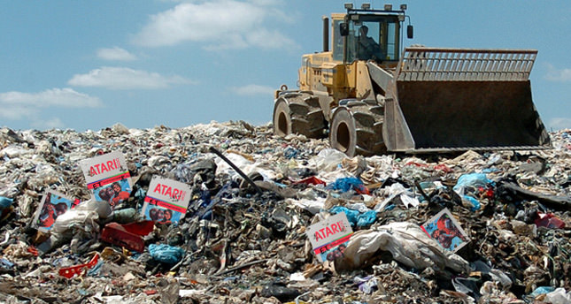

Las primeras Arcades
¿Como empezo la Industria?.

La Primera Consola de la Historia
Un antes y despues para la Industria.

La acumulacion de Malos Juegos en 1982
Cuando la Industria casi muere.
La industria del gaming, a lo largo de sus mas de 50 años de historia, tiene cientas de anecdotas, eventos y sucesos que cambiaron todo lo que conocemos hasta el dia de hoy, y el proposito de esta pagina, es que las conozcas. Y al mismo tiempo, poder explorar nuevas capas detras de las companias que las dieron a conocer. Por lo que para comprender esta industria fue necesario saber que para mantenerla a pie tuvieron que pasar varios cambios y a su vez, decepciones.